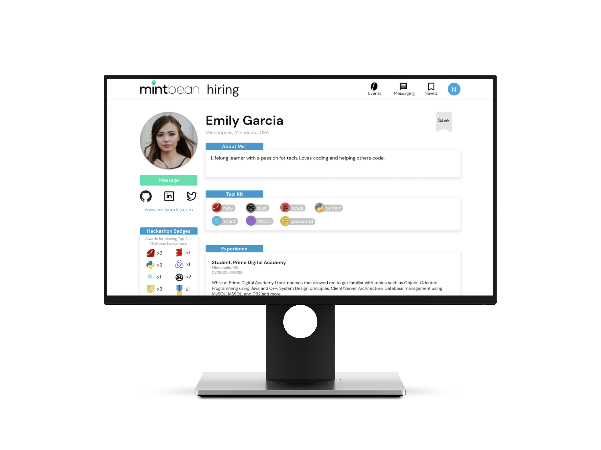
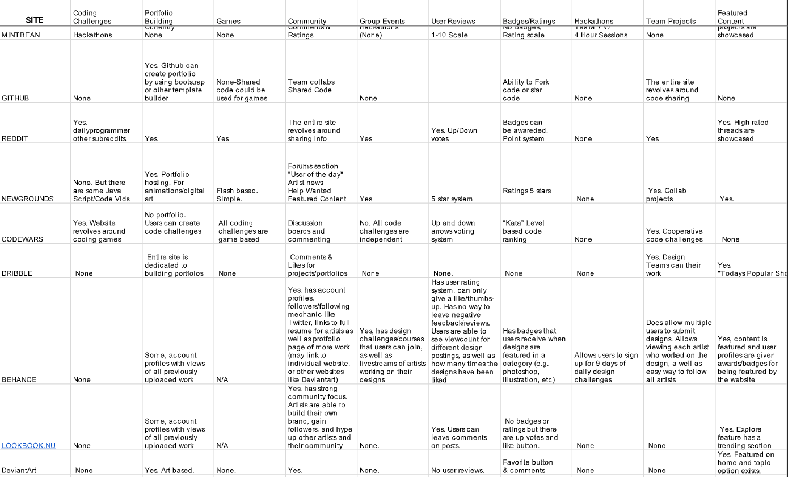
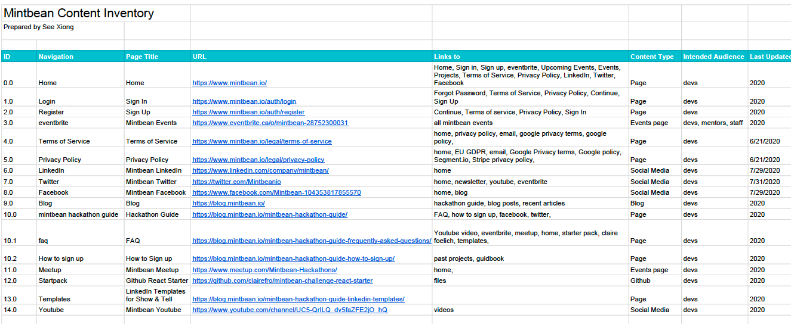
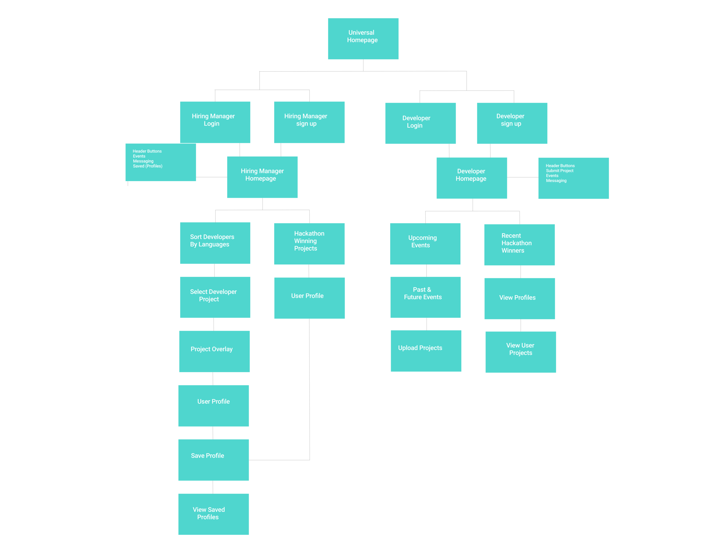
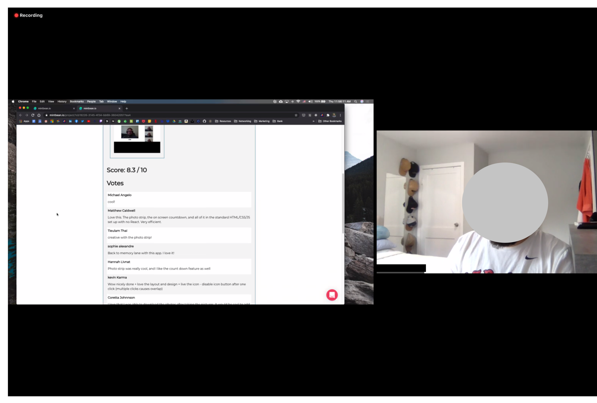
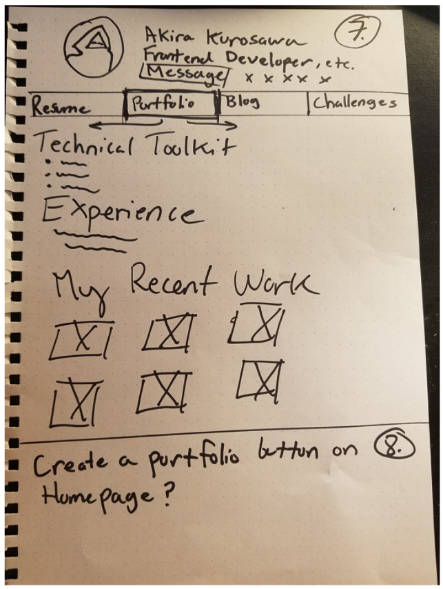
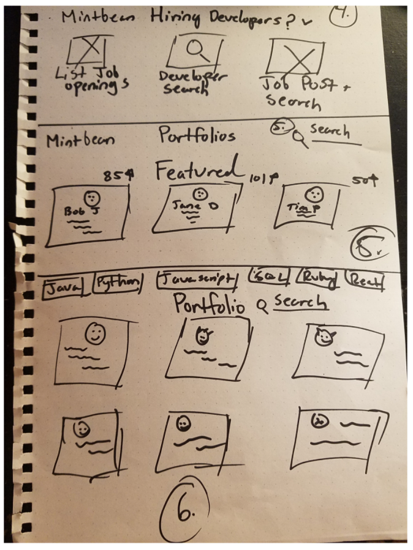
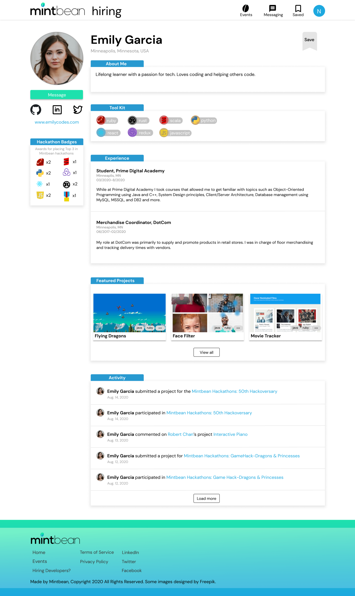

Mintbean is an online space for technology-oriented professionals. Mintbean members receive invaluable support and mentorship from veteran professionals working within the industry. I was tasked with redesigning their website to focus on enhancing user profiles for software developers to convert them into attractive portfolios for employers.
I researched websites that fall under a similar umbrella as Mintbean. I sought to identify which companies offer hackathons and developer profiles that may act as portfolios. I found several sites offered portfolio building tools but few offered hackathons which differentiates Mintbean from its competitors. I concluded that there is an opportunity to incorporate the work completed during hackathons into resume-like user profiles.


Mintbean has two primary user groups: aspiring developers and hiring managers. I mapped out key pages each group would move through so I can understand the experience in-depth. In organizing the user flows, I saw a clear snapshot of the website's structure and how users navigate it.

I interviewed several aspiring developers that sought to break into the industry. They all created Mintbean profiles and shared positive experiences at hackathon events. I also attended a multi-hour hackathon event that Mintbean hosted to understand the experience. As a result of this research, I found that users wanted a more robust profile where they could showcase their personal work, hackathon work and their past experience. Users expressed concerns about creating online developer portfolios/resumes. Thus, Mintbean has a unique opportunity to fix this pain point.

Based on insights from my previous user interviews, I sketched out a series of low-fidelity user interface concepts. This helped me explore the ways in which Mintbean could better support both developers and hiring managers. My goal is to rethink the profile experience and create a user profile that could function as a stand-alone resume for hiring managers. These sketches helped me test different ways of presenting key information such as technical skills, experience, and recent work. I aimed for a format that feels both easy to scan and useful for recruiters. Additionally, I explored how to make navigation more intuitive by organizing content around the user's goals—including searching for portfolios, viewing featured profiles, and accessing job-related information.


I organized the Developer Portfolio page into clearly defined sections to improve readability, reinforce visual hierarchy, and support quick scanning. In this layout, I intend to help users present their technical expertise, relevant experience, and preferred contact methods in a way that is beneficial for hiring managers. I also incorporated achievement badges to add credibility and highlight hackathon wins and other notable accomplishments. Finally, I built high-fidelity wireframes for the full Mintbean experience. The complete annotated wireframes are available here.
